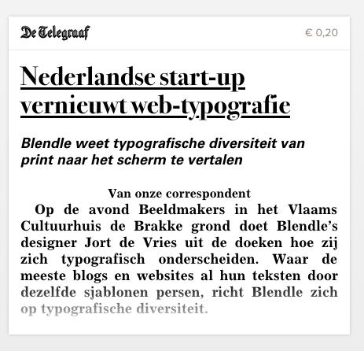

F.l.t.r.: Rolf Coppens, Jort de Vries, Eric Schrijver in De Brakke Grond, Amsterdam
Beeldmakers is an evening in Amsterdam for and by contemporary visual makers. Curated by Veerle Devreese, Rolf Coppens and Eric Schrijver the first edition focuses on Screen Typography. Exploring the possibilities offered by the advancing web standards and evolving devices, the evening features talks by Bas Jacobs and Frederik Berlaen. Actress declares a document that attempts to codify the relation between users and producers of typography: An End User License Agreement.
E.M.
After having talked with those who are invested in the nitty gritty of making fonts, now there is a moment to talk with someone who uses them. In fact, Jort just told me they might be the website out there that licenses the most web-fonts… currently serving a stack of over 200 fonts! Today we meet Jort de Vries who is the lead designer for Blendle, a Dutch startup that is translating the typographical diversity of the printed press to the web. We’re very glad to have him with us tonight.
Jort, we’ve seen your presentation at the Cross Media Café where you mention shortly that you collaborate with the publications in transitioning their design from print to screen. Can you tell us something more about how that process works?
J.d.V.
Sure. It is a process we start again for each publication. We receive two things from each publication. The PDF’s. These we use to create our view that allows to browse the publications. Then the articles themselves. We receive the XML, that is the same format that their print designers have to integrate into their workflow. We have to take this and create a template that transforms this into the HTML and CSS that make up the design for the screen.
It is a custom process. Every publication has its own structure, and also the files we get from the editor do not always provide all the information we need. So the XML might indicate a heading, a lead, a subheading, and we have to find a way to translate that for the screen. Sometimes we ask the publisher to change the structure of their format to make it more clear and easier to process.

A newspaper snippet from Blendle. For a Dutch reader it will be immediately clear this is from the country’s foremost tabloid newspaper, De Telegraaf, because of the underlined headings.
R.C.
On a level of choice, how does it work—can you get your hands on all typefaces?
J.d.V.
That is not self-evident. There is a lot of negotiation. Not all fonts used in prints we are able to license for the web. So we have to make an approximation. Of course we are already making a translation from one medium to the other. The most important is to stay true to the spirit of the publication.
Of course we also have to a lot of optimisations. There is no way you can load full character sets for 200 fonts at once. Also we deal with multiple font serving services. So there is a lot of clever programming on to make it all work, trying to figure out beforehand which letters from which typefaces we are going to need when displaying a specific screen.
Articles in the same layout and in separate layouts
E.M.
Behind us we see an example of the way it works in practice. We see different articles from different publications living side by side, but each with their own distinct typographic personality. If I understand correctly, this is something you came into in the process of design. In your first design iterations all the articles still had the same layout: like you see in the other frame of this animation…
J.d.V.
It was a key moment in the development of our product. When all the articles shared the same design everything looked Blendle—but we did not want to be an aggregator, a place that gathers a lot of content and puts on its own sauce. There is enough sites like that on the internet. We wanted to be a platform, where the content could come in its own. So the content needs to be able to bring its own character with it.
E.M.
Your approach, where each article has its own typographic signature, seems to touch on a larger problem in web architecture. A lot of applications use centralised templates, through which they push all content. Change the template, all contents changes along with it. The kind of line between what is written in a page and the way it looks is cut entirely. You seem to have found a solution where you have different articles that mix and match but retain a more close relation to their form. In that sense, do you see Blendle’s approach being taken up by other websites?
J.d.V.
Our value proposition is very specific, as we try to translate the typographic diversity from the landscape of periodical press to the screen. I am not sure if it could be more generally adopted for other kinds of websites.
E.M.
I wish more sites shared some of that sensibility! I remember reading an article by Douglas Rushkoff, on Timothy Leary’s last days. I read this as an article, in 2012, on Rushkoff’s website. The design looks very 2010. The article, I suddenly remember, I have already read in the 1990ies. In translation, in Kijk Magazine. I have a mental image of the layout in my head: very 1990ies. The text also screams 1990ies, the way they talk about the internet… To then see it look 2010 in 2012, it is so wrong to me.